공조냉동기계기사(구) (2018-08-19 기출문제)
1과목: 기계열역학
1. 그림과 같이 카르노 사이클로 운전하는 기관 2개가 직렬로 연결되어 있는 시스템에서 두 열기관의 효율이 똑같다고 하면 중간 온도 T는 약 몇 K인가?
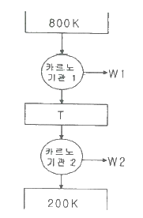
- 330K
- 400K
- 500K
- 660K
(정답률: 70%)

2. 역카르노 사이클로 운전하는 이상적인 냉동사이클에서 응축기 온도가 40℃, 증발기 온도가 -10℃이면 성능 계수는?
- 4.26
- 5.26
- 3.56
- 6.56
(정답률: 68%)
3. 밀폐시스템에서 초기 상태가 300K, 0.5m3인 이상기체를 등온과정으로 150kPa에서 600 kPa까지 천천히 압축하였다. 이 압축과정에 필요한 일은 약 몇 kJ인가?
- 104
- 208
- 304
- 612
(정답률: 54%)
4. 에어컨을 이용하여 실내의 열을 외부로 방출하려 한다. 실외 35℃, 실내 20℃인 조건에서 실내로부터 3kW의 열을 방출하려 할 때 필요한 에어컨의 최소 통력은 약 몇 kW인가?
- 0.154
- 1.54
- 0.308
- 3.08
(정답률: 56%)
5. 압력 250kPa, 체적 0.35m3의 공기가 일정 압력 하에서 팽창하여, 체적이 0.5m3로 되었다. 이 때 내부에너지의 증가가 93.9kJ이었다면, 팽창에 필요한 열량은 약 몇 kJ인가?
- 43.8
- 56.4
- 131.4
- 175.2
(정답률: 64%)
6. 이상기체의 가역 폴리트로픽 과정은 다음과 같다. 이에 대한 설명으로 옳은 것은? (단, P는 압력, v는 비체적, C는 상수이다.)
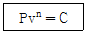
- n=0 이면 등온과정
- n=1 이면 정적과정
- n=∞ 이면 정압과정
- n=k (비열비)이면 단열과정
(정답률: 67%)
7. 열과 일에 대한 설명 중 옳은 것은?
- 열역학적 과정에서 열과 일은 모두 경로에 무관한 상태함수로 나타낸다.
- 일과 열의 단위는 대표적으로 Watt(W)를 사용한다.
- 열역학 제1법칙은 열과 일의 방향성을 제시한다.
- 한 사이클 과정을 지나 원래 상태로 돌아왔을 때 시스템에 가해진 전체 열량은 시스템이 수행한 전체 일의 양과 같다.
(정답률: 58%)
8. 랭킨 사이클의 각각의 지점에서 엔탈피는 다음과 같다. 이 사이클의 효율은 약 몇 %인가? (단, 펌프일은 무시한다.)
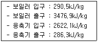
- 32.4%
- 29.8%
- 26.7%
- 23.8%
(정답률: 63%)
9. 공기의 정압비열(Cp, kJ/(kg·℃))이 다음과 같다고 가정한다. 이때 공기 5kg을 0℃에서 100℃까지 일정한 압력하에서 가열하는데 필요한 열량은 약 몇 kJ인가? (단, 다음 식에서 t는 섭씨온도를 나타낸다.)
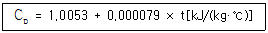
- 85.5
- 100.9
- 312.7
- 504.6
(정답률: 66%)
10. 공기 표준 사이클로 운전하는 디젤 사이클 엔진에서 압축비는 18, 체절비(분사 단절비)는 2일 때 이 엔진의 효율은 약 몇 %인가? (단, 비열비는 1.4이다.)
- 63%
- 68%
- 73%
- 78%
(정답률: 32%)
11. 카르노 냉동기 사이클과 카르노 열펌프 사이클에서 최고 온도와 최소 온도가 서로 같다. 카르노 냉동기의 성적 계수는 COPR이라고 하고, 카르노 열펌프의 성적계수는 COPHP라고 할 때 다음 중 옳은 것은?
- COPHP + COPR = 1
- COPHP + COPR = 0
- COPR - COPHP = 1
- COPHP - COPR = 1
(정답률: 62%)
12. 500℃의 고온부와 50℃의 저온부 사이에서 작동하는 Carnot 사이클 열기관의 열효율은 얼마인가?
- 10%
- 42%
- 58%
- 90%
(정답률: 70%)
13. 이상기체가 등온 과정으로 부피가 2배로 팽창할 때 한 일이 W1이다. 이 이상기체가 같은 초기조건 하에서 폴리트로픽 과정(지수=2)으로 부피가 2배로 팽창할 때 한 일은?
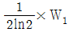
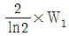
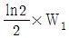
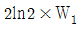
(정답률: 39%)
14. 클라우지우스(Clausius) 적분 중 비가역 사이클에 대하여 옳은 식은? (단, Q는 시스템에 공급되는 열, T는 절대온도를 나타낸다.)
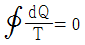
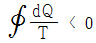
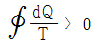
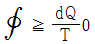
(정답률: 68%)
15. 다음 중 이상적인 스로틀 과정에서 일정하게 유지되는 양은?
- 압력
- 엔탈피
- 엔트로피
- 온도
(정답률: 65%)
16. 70kPa에서 어떤 기체의 체적이 12m3이었다. 이 기체를 800kPa까지 폴리트로픽 과정으로 압축했을 때 체적이 2m3로 변화했다면, 이 기체의 폴리트로프 지수는 약 얼마인가?
- 1.21
- 1.28
- 1.36
- 1.43
(정답률: 55%)
17. 어떤 기체 1kg이 압력 50kPa, 체적 2.0m3의 상태에 서 압력 1000kPa 체적 0.2m3의 상태로 변화하였다. 이 경우 내부에너지의 변화가 없다고 한다면, 엔탈피의 변화는 얼마나 되겠는가?
- 57kJ
- 79kJ
- 91kJ
- 100kJ
(정답률: 59%)
18. 두 물체가 각각 제3의 물체와 온도가 같을 때는 두 물체도 역시 서로 온도가 같다는 것을 말하는 법칙으로 온도측정의 기초가 되는 것은?
- 열역학 제 0법칙
- 열역학 제 1법칙
- 열역학 제 2법칙
- 열역학 제 3법칙
(정답률: 60%)
19. 이상기체가 등온과정으로 체적이 감소할 때 엔탈피는 어떻게 되는가?
- 변하지 않는다.
- 체적에 비례하여 감소한다.
- 체적에 반비례하여 증가한다.
- 체적의 제곱에 비례하여 감소한다.
(정답률: 53%)
20. 이상적인 디젤 기관의 압축비가 16일 때 압축전의 공기 온도가 90℃라면, 압축후의 공기의 온도는 약 몇 ℃인가? (단, 공기의 비열비는 1.4 이다.)
- 1101℃
- 718℃
- 808℃
- 828℃
(정답률: 42%)
2과목: 냉동공학
21. 흡수식 냉동기의 특정에 대한 설명으로 옳은 것은?
- 자동제어가 어렵고 운전경비가 많이 소요된다.
- 초기 운전 시 정격 성능을 발휘할 때까지의 도달속도가 느리다.
- 부분 부하에 대한 대응이 어렵다.
- 증기 압축식보다 소음 및 진동이 크다.
(정답률: 70%)
22. 내경이 20mm인 관 안으로 포화상태의 냉매가 흐르고 있으며 관은 단열재로 싸여있다. 관의 두께는 1mm이며, 관재질의 열전도도는 50W/m·K이며, 단열재의 열전도도는 0.02W/m·K이다. 단열재의 내경과 외경은 각각 22mm와 42mm일 때, 단위길이당 열손실(W)은? (단, 이 때 냉매의 온도는 60℃, 주변 공기의 온도는 0℃이며, 냉매측과 공기측의 평균 대류열전달계수는 각각 2000W/m2·K와 10W/m2·K이다. 관과 단열재 접촉부의 열저항은 무시한다.)
- 9.87
- 10.15
- 11.10
- 13.27
(정답률: 26%)
23. 40 냉동톤의 냉동부하를 가지는 제빙공장이 있다. 이 제빙공장 냉동기의 압축기 출구 엔탈피가 457kcal/kg, 증발기 출구 엔탈피가 369kcal/kg, 증발기 입구 엔탈피가 128kcal/kg일 때, 냉매 순환량(kg/h)은? (단, 1RT는 3320kcal/h이다.)
- 551
- 403
- 290
- 25.9
(정답률: 53%)
24. 증기압축식 냉동 시스템에서 냉매량 부족 시 나타나는 현상으로 틀린 것은?
- 토출압력의 감소
- 냉동능력의 감소
- 흡입가스의 과열
- 토출가스의 온도 감소
(정답률: 64%)
25. 프레온 냉동장치에서 가용전에 관한 설명으로 틀린 것은?
- 가용전의 용융온도는 일반적으로 75℃ 이하로 되어 있다.
- 가용전은 Sn(주석), Cd( 카드뮴), Bi(비스무트)등의 합금이다.
- 온도상승에 따른 이상 고압으로부터 응축기 파손을 방지한다.
- 가용전의 구경은 안전밸브 최소구경의 1/2 이하이어야 한다.
(정답률: 66%)
26. 암모니아 냉동장치에서 고압측 게이지 압력이 14kg/cm2·g, 저압측 게이지 압력이 3kg/cm2·g이고, 피스톤 압출량이 100m3/h, 흡입증기의 비체적이 0.5m3/kg이라 할 때, 이 장치에서의 압축비와 냉매순환량(kg/h)은 각각 얼마인가? (단, 압축기의 체적효율은 0.7로 한다.)
- 3.73, 70
- 3.73, 140
- 4.67, 70
- 4.67, 140
(정답률: 50%)
27. 피스톤 압출량이 48m3/h인 압축기를 사용하는 아래와 같은 냉동장치가 있다. 압축기 체적효율(nv)이 0.75이고, 배관에서의 열손실을 무시하는 경우, 이 냉동장치의 냉동능력(RT)? (단, 1RT는 3320kcal/h이다.)
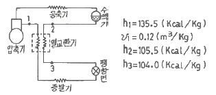
- 1.83
- 2.54
- 2.71
- 2.84
(정답률: 37%)
28. 다음 중 독성이 거의 없고 금속에 대한 부식성이 적어 식품냉동에 사용되는 유기질 브라인은?
- 프로필렌글리콜
- 식염수
- 염화칼슘
- 염화마그네슘
(정답률: 66%)
29. 열통과율 900kcal/m2·h·℃, 전열면적 5m2인 아래 그림과 같은 대향류 열교환기에서의 열교환량(kcal/h)은? (단, t1 : 27℃, t2 : 13℃, tw1 : 5℃, tw2 : 10℃이다.)
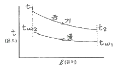
- 26865
- 53730
- 45000
- 90245
(정답률: 58%)
30. 냉동장치에 사용하는 브라인 순환량이 200L/min이고, 비열이 0.7kcal/kg·℃이다. 브라인의 입·출구 온도는 각각 -6℃와 -10℃일 때, 브라인 쿨러의 냉동능력(kcal/h)은? (단, 브라인의 비중은 1.2이다.)
- 36880
- 38860
- 40320
- 43200
(정답률: 66%)
31. 프레온 냉매의 경우 흡입배관에 이중 입상관을 설치하는 목적으로 가장 적합한 것은?
- 오일의 회수를 용이하게 하기 위하여
- 흡입가스의 과열을 방지하기 위하여
- 냉매액의 흡입을 방지하기 위하여
- 흡입관에서의 압력강하를 줄이기 위하여
(정답률: 66%)
32. 다음 중 흡수식 냉동기의 용량제어 방법으로 적당하지 않은 것은?
- 흡수기 공급흡수제 조절
- 재생기 공급용액량 조절
- 재생기 공급증기 조절
- 응축수량 조절
(정답률: 43%)
33. 냉동장치 운전 중 팽창밸브의 열림이 적을 때, 발생하는 현상이 아닌 것은?
- 증발압력은 저하한다.
- 냉매 순환량은 감소한다.
- 액압축으로 압축기가 손상된다.
- 체적효율은 저하한다.
(정답률: 59%)
34. 폐열을 회수하기 위한 히트파이프(heat pipe)의 구성요소가 아닌 것은?
- 단열부
- 응축부
- 증발부
- 팽창부
(정답률: 50%)
35. 냉동기유가 갖추어야 할 조건으로 틀린 것은?
- 응고점이 낮고, 인화점이 높아야 한다.
- 냉매와 잘 반응하지 않아야 한다.
- 산화가 되기 쉬운 성질을 가져야 된다.
- 수분, 산분을 포함하지 않아야 된다.
(정답률: 78%)
36. 냉동장치 내에 불응축 가스가 생성되는 원인으로 가장 거리가 먼 것은?
- 냉동장치의 압력이 대기압 이상으로 운전될 경우 저압측에서 공기가 침입한다.
- 장치를 분해, 조립하였을 경우에 공기가 잔류한다.
- 압축기의 축봉장치 패킹 연결부분에 누설부분이 있으면 공기가 장치 내에 침입한다.
- 냉매, 윤활유 퉁의 열분해로 인해 가스가 발생한다.
(정답률: 73%)
37. 가역 카르노 사이클에서 고온부 40℃, 저온부 0℃로 운전될 때 열기관의 효율은?
- 7.825
- 6.825
- 0.147
- 0.128
(정답률: 62%)
38. 다음 냉동장치에서 물의 증발열을 이용하지 않는 것은?
- 흡수식 냉동장치
- 흡착식 냉동장치
- 증기분사식 냉동장치
- 열전식 냉동장치
(정답률: 72%)
39. 다음 중 밀착 포장된 식품을 냉각부동액 중에 집어 넣어 동결시키는 방식은?
- 침지식 동결장치
- 접촉식 동결장치
- 진공 동결장치
- 유동층 동결장치
(정답률: 63%)
40. 압축기에 부착하는 안전밸브의 최소 구경을 구하는 공식으로 옳은 것은?
- 냉매상수 × (표준회전속도에서 1시간의 피스톤 압출량)1/2
- 냉매상수 × (표준회전속도에서 1시간의 피스톤 압출량)1/3
- 냉매상수 × (표준회전속도에서 1시간의 피스톤 압출량)1/4
- 냉매상수 × (표준회전속도에서 1시간의 피스톤 압출량)1/5
(정답률: 54%)
3과목: 공기조화
41. 장방형 덕트(장변 a, 단변 b)를 원형덕트로 바꿀 때 사용하는 식은 아래와 같다. 이 식으로 환산된 장방형 덕트와 원형덕트의 관계는?
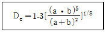
- 두 덕트의 풍량과 단위 길이당 마찰손실이 같다.
- 두 덕트의 풍량과 풍속이 같다.
- 두 덕트의 풍속과 단위 길이당 마찰손실이 같다.
- 두 덕트의 풍량과 풍속 및 단위 길이당 마찰 손실이 모두 같다.
(정답률: 55%)
42. 열회수방식 중 공조설비의 에너지 절약기법으로 많이 이용되고 있으며, 외기 도입량이 많고 운전시간이 긴 시설에서 효과가 큰 것은?
- 잠열교환기 방식
- 현열교환기 방식
- 비열교환기 방식
- 전열교환기 방식
(정답률: 67%)
43. 중앙식 공조방식의 특징에 대한 설명으로 틀린 것은?
- 중앙집중식 이므로 운전 및 유지관리가 용이하다.
- 리턴 팬을 설치하면 외기냉방이 가능하게 된다.
- 대형건물보다는 소형건물에 적합한 방식이다.
- 덕트가 대형이고, 개별식에 비해 설치공간이 크다.
(정답률: 74%)
44. 어느 건물 서편의 유리 면적이 40m2이다. 안쪽에 크림색의 베네시언 블라인드를 설치한 유리면으로부터 오후 4시에 침입하는 열량(kW)은? (단, 외기는 33℃, 실내는 27℃, 유리는 1중이며, 유리의 열통과율(K)은 5.9W/m2·℃, 유리창의 복사량(Igr)은 608W/m2, 차폐계수(Ks)는 0.56이다.)
- 15
- 13.6
- 3.6
- 1.4
(정답률: 40%)
45. 보일러의 스케일 방지방법으로 틀린 것은?
- 슬러지는 적절한 분출로 제거한다.
- 스케일 방지 성분인 칼슘의 생성을 돕기 위해 경도가 높은 물을 보일러수로 활용한다.
- 경수연화장치를 이용하여 스케일 생성을 방지한다.
- 인산염을 일정농도가 되도록 투입한다.
(정답률: 71%)
46. 외부의 신선한 공기를 공급하여 실내에서 발생한 열과 오염물질을 대류효과 또는 급배기팬을 이용하여 외부로 배출시키는 환기방식은?
- 자연환기
- 전달환기
- 치환환기
- 국소환기
(정답률: 66%)
47. 다음 중 사용되는 공기 선도가 아닌 것은? (단, h : 엔탈피, x : 절대습도, t : 온도, p : 압력이다.)
- h-x선도
- t-x선도
- t-h선도
- p-h선도
(정답률: 61%)
48. 다음 중 일반 공기 냉각용 냉수 코일에서 가장 많이 사용되는 코일의 열수로 가장 적정한 것은?
- 0.5 ~ 1
- 1.5 ~ 2
- 4 ~ 8
- 10 ~ 14
(정답률: 74%)
49. 일사를 받는 외벽으로부터의 침입열량(q)을 구하는 식으로 옳은 것은? (단, k는 열관류율, A는 면적, △t는 상당외기 온도차이다.)
- q = k × A × △t
- q = 0.86 × A / △t
- q = 0.24 × A × △t / k
- q = 0.29 × k / (A × △t)
(정답률: 71%)
50. 공기의 감습장치에 관한 설명으로 틀린 것은?
- 화학적 감습법은 흡착과 흡수 기능을 이용하는 방법이다.
- 압축식 감습법은 감습만을 목적으로 사용하는 경우 재열이 필요하므로 비경제적이다.
- 흡착식 감습법은 실리카겔 등을 사용하며, 흡습재의 재생이 가능하다.
- 흡수식 감습법은 활성 알루미나를 이용하기 때문에 연속적이고 큰 용량의 것에는 적용하기 곤란하다.
(정답률: 63%)
51. 간접난방과 직접난방 방식에 대한 설명으로 틀린 것은?
- 간접난방은 중앙 공조기에 의해 공기를 가열해 실내로 공급하는 방식이다.
- 직접난방은 방열기에 의해서 실내공기를 가열하는 방식이다.
- 직접난방은 방열체의 방열형식에 따라 대류난방과 복사난방으로 나눌 수 있다.
- 온풍난방과 증기난방은 간접 난방에 해당된다.
(정답률: 63%)
52. 다음 중 온수난방용 기기가 아닌 것은?
- 방열기
- 공기방출기
- 순환펌프
- 증발탱크
(정답률: 67%)
53. 다음 중 축류형 취출구에 해당되는 것은?(문제 오류로 가답안 발표시 2번으로 발표되었지만 확정답안 발표시 2, 4번이 정답 처리 되었습니다. 여기서는 가답안인 2번을 누르면 정답 처리 됩니다.)
- 아네모스탯형 취출구
- 펑커루버형 취출구
- 팬형 취출구
- 다공판형 취출구
(정답률: 59%)
54. 냉수코일의 설계상 유의사항으로 옳은 것은?
- 일반적으로 통과 풍속은 2~3m/s로 한다.
- 입구 냉수온도는 20℃ 이상으로 취급한다.
- 관내의 물의 유속은 4m/s 전후로 한다.
- 병류형으로 하는 것이 보통이다.
(정답률: 64%)
55. 수증기 발생으로 인한 환기를 계획하고자 할 때, 필요 환기량 Q(m3/h)의 계산식으로 옳은 것은? (단, qs : 발생 현열량(kJ/h), W : 수증기 발생량(kg/h), M : 먼지발생량(m3/h), ti(℃) : 허용 실내온도, Xi(kg/kg) : 허용 실내 절대습도, to(℃) : 도입 외기온도, Xo(kg/kg) : 도입 외기절대습도, K, Ko : 허용실내 및 도입외기 가스농도, C, Co : 허용 실내 및 도입외기 및 먼지농도 이다.)
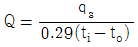
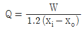
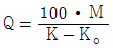
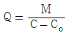
(정답률: 50%)
56. 다음 그림에서 상태 ①인 공기를 ②로 변화시켰을 때의 현열비를 바르게 나타낸 것은?
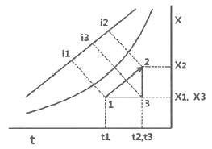
- (i3 - i1)/(i2 - i1)
- (i2 - i3)/(i2 - i1)
- (x2 - x1)/(t1 - t2)
- (t1 - t2)/(i3 - i1)
(정답률: 64%)
57. 보일러의 종류 중 수관보일러 분류에 속하지 않는 것은?
- 자연순환식 보일러
- 강제순환식 보일러
- 연관 보일러
- 관류 보일러
(정답률: 55%)
58. 제주지방의 어느 한 건물에 대한 냉방기간 동안의 취득열량(GJ/기간)은? (단, 냉방도일 CD24-24=162.4(deg℃·day), 건물 구조체 표면적 500m2, 열관류율은 0.58W/m2·℃, 환기에 의한 취득열량은 168W/℃이다.)
- 9.37
- 6.43
- 4.07
- 2.36
(정답률: 32%)
59. 송풍량 2000m3/min을 송풍기 전후의 전압차 20Pa로 송풍하기 위한 필요 전동기 출력(kW)은? (단, 송풍기의 전압효율은 80%, 전동효율은 V벨트로 0.95이며, 여유율은 0.2이다.)
- 1.⑤
- 10.35
- 14.04
- 25.32
(정답률: 22%)
60. 에어와셔 단열 가습시 포화효율은 어떻게 표시하는가? (단, 입구공기의 건구온도 t1, 출구공기의 건구온도 t2, 입구공기의 습구온도 tw1, 출구공기의 습구온도 tw2이다.)
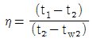
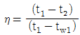
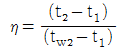
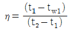
(정답률: 41%)
4과목: 전기제어공학
61. 변압기의 부하손(동손)에 관한 설명으로 옳은 것은?
- 동손은 온도 변화와 관계없다.
- 동손은 주파수에 의해 변화한다.
- 동손은 부하 전류에 의해 변화한다.
- 동손은 자속 밀도에 의해 변화한다.
(정답률: 57%)
62. 목표값이 다른 양과 일정한 비율 관계를 가지고 변화하는 경우의 제어는?
- 추종 제어
- 비율 제어
- 정치 제어
- 프로그램 제어
(정답률: 71%)
63. 프로세스 제어용 검출기기는?
- 유량계
- 전위차계
- 속도검출기
- 전압검출기
(정답률: 59%)
64. R-L-C 직렬회로에서 전압(E)과 전류(I) 사이의 위상 관계에 관한 설명으로 옳지 않은 것은?
- XL=XC 인 경우 I는 E와 동상이다.
- XL＞XC인 경우 I는 E보다 θ 만큼 뒤진다.
- XL＜XC인 경우 I는 E보다 θ 만큼 앞선다.
- XL＜(XC-R)인 경우 I는 E보다 θ 만큼 뒤진다.
(정답률: 64%)
65. 그림과 같은 R-L-C 회로의 전달함수는?
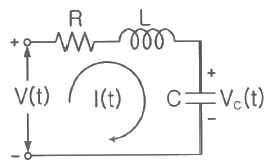
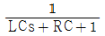
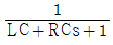
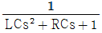
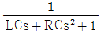
(정답률: 49%)
66. 디지털 제어에 관한 설명으로 옳지 않은 것은?
- 디지털 제어의 연산속도는 샘플링계에서 결정된다.
- 디지털 제어를 채택하면 조정 개수 및 부품수가 아날로그 제어보다 줄어든다.
- 디지털 제어는 아날로그 제어보다 부품편차 및 경년변화의 영향을 덜 받는다.
- 정밀한 속도제어가 요구되는 경우 분해능이 떨어지더라도 디지털 제어를 채택하는 것이 바람직하다.
(정답률: 61%)
67. 그림과 같은 피드백 제어 계에서의 폐루프 종합 전달함수는?
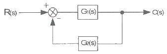
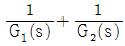
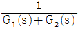
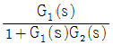
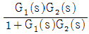
(정답률: 70%)
68. 자성을 갖고 있지 않은 철편에 코일을 감아서 여기에 흐르는 전류의 크기와 방향을 바꾸면 히스테리시스 곡선이 발생되는데, 이 곡선 표현에서 X축과 Y축을 옳게 나타낸 것은?
- X축 - 자화력, Y축 - 자속밀도
- X축 - 자속밀도, Y축 - 자화력
- X축 - 자화세기, Y축 - 잔류자속
- X축 - 잔류자속, Y축 - 자화세기
(정답률: 44%)
69. 그림과 같은 회로에서 전력계 W와 직류전압계 V의 지시가 각각 60[W], 150[V]일 때 부하전력은 얼마인가? (단, 전력계의 전류코일의 저항은 무시하고 전압계의 저항은 1[kΩ]이다.)
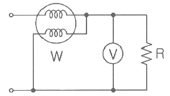
- 27.5[W]
- 30.5[W]
- 34.5[W]
- 37.5[W]
(정답률: 37%)
70. 제어계의 동작상태를 교란하는 외란의 영향을 제거할 수 있는 제어는?
- 순서 제어
- 피드백 제어
- 시퀀스 제어
- 개루프 제어
(정답률: 72%)
71.
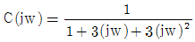
일 때 이 요소의 인디셜 응답은?- 진동
- 비진동
- 임계진동
- 선형진동
(정답률: 39%)
72. 다음의 논리식 중 다른 값을 나타내는 논리식은?
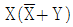
- X(X + Y)
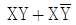
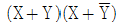
(정답률: 50%)
73. 다음 중 불연속 제어에 속하는 것은?
- 비율 제어
- 비례 제어
- 미분 제어
- ON-OFF 제어
(정답률: 75%)
74. 저항 R[Ω]에 전류 I[A]를 일정 시간 동안 흘렸을 때 도선에 발생하는 열량의 크기로 옳은 것은?
- 전류의 세기에 비례
- 전류의 세기에 반비례
- 전류의 세기의 제곱에 비례
- 전류의 세기의 제곱에 반비례
(정답률: 64%)
75. 어 떤 코일에 흐르는 전류가 0.01초 사이에 일정하게 50[A]에서 10[A]로 변할 때 20[V]의 기전력이 발생할 경우 자기인덕턴스[mH]는?
- 5
- 10
- 20
- 40
(정답률: 38%)
76. 유도전동기에서 슬립이 “0”이라고 하는 것은?
- 유도전동기가 정지 상태인 것을 나타낸다.
- 유도전동기가 전부하 상태인 것을 나타낸다.
- 유도전동기가 동기속도로 회전한다는 것이다.
- 유도전동기가 제동기의 역할을 한다는 것이다.
(정답률: 72%)
77. 공기식 조작기기에 관한 설명으로 옳은 것은?
- 큰 출력을 얻을 수 있다.
- PID 동작을 만들기 쉽다.
- 속응성이 장거리에서는 빠르다.
- 신호를 먼 곳까지 보낼 수 있다.
(정답률: 57%)
78. 자기회로에서 퍼미언스(permeance)에 대응하는 전기회로의 요소는?
- 도전율
- 컨덕턴스
- 정전용량
- 엘라스턴스
(정답률: 62%)
79. 다음 설명에 알맞은 전기 관련 법칙은?
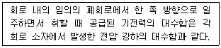
- 옴의 법칙
- 가우스 법칙
- 쿨롱의 법칙
- 키르히호프의 법칙
(정답률: 65%)
80. 방사성 위험물을 원격으로 조작하는 인공수(人工手 : manipulator)에 사용되는 제어계는?
- 서보기구
- 자동조정
- 시퀀스 제어
- 프로세스 제어
(정답률: 59%)
5과목: 배관일반
81. 배관설비 공사에서 파이프 래크의 폭에 관한 설명으로 틀린 것은?
- 파이프 래크의 실제 폭은 신규라인을 대비하여 계산된 폭보다 20% 정도 크게 한다.
- 파이프 래크상의 배관밀도가 작아지는 부분에 대해서는 파이프 래크의 폭을 좁게 한다.
- 고온배관에서는 열팽창에 의하여 과대한 구속을 받지 않도록 충분한 간격을 둔다.
- 인접하는 파이프의 외측과 외측과의 최소 간격을 25mm로 하여 래크의 폭을 결정한다.
(정답률: 48%)
82. 다음 중 방열기나 팬코일 유니트에 가장 적합한 관 이음은?
- 스위블 이음
- 루프 이음
- 슬리브 이음
- 벨로즈 이음
(정답률: 60%)
83. 원심력 철근 콘크리트관에 대한 설명으로 틀린 것은?
- 흉(hume)관이라고 한다.
- 보통관과 압력관으로 나뉜다.
- A형 이음재 형상은 칼라이음쇠를 말한다.
- B형 이음재 형상은 삽입이음쇠를 말한다.
(정답률: 55%)
84. 냉매 배관 중 토출관 배관 시공에 관한 설명으로 틀린 것은?
- 응축기가 압축기보다 2.5m 이상 높은 곳에 있을 때는 트랩을 설치한다.
- 수평관은 모두 끝내림 구배로 배관한다.
- 수직관이 너무 높으면 3m마다 트랩을 설치한다.
- 유분리기는 응축기보다 온도가 낮지 않은 곳에 설치한다.
(정답률: 53%)
85. 배관의 보온재를 선택할 때 고려해야 할 점이 아닌 것은?
- 불연성일 것
- 열전도율이 클 것
- 물리적, 화학적 강도가 클 것
- 흡수성이 적을 것
(정답률: 71%)
86. 다음 냉매액관 중에 플래시가스 발생 원인이 아닌 것은?
- 열교환기를 사용하여 과냉각도가 클 때
- 관경이 매우 작거나 현저히 입상할 경우
- 여과망이나 드라이어가 막혔을 때
- 온도가 높은 장소를 통과 시
(정답률: 59%)
87. 고가 탱크식 급수방법에 대한 설명으로 틀린 것은?
- 고층건물이나 상수도 압력이 부족할 때 사용된다.
- 고가탱크의 용량은 양수펌프의 양수량과 상호 관계가 있다.
- 건물내의 밸브나 각 기구에 일정한 압력으로 물을 공급한다.
- 고가탱크에 펌프로 물을 압송하여 탱크내에 공기를 압축 가압하여 일정한 압력을 유지시킨다.
(정답률: 52%)
88. 지역난방 열공급 관로 중 지중 매설방식과 비교한 공동구내 배관 시설의 장점이 아닌 것은?
- 부식 및 침수 우려가 적다.
- 유지보수가 용이하다.
- 누수점검 및 확인이 쉽다.
- 건설비용이 적고 시공이 용이하다.
(정답률: 55%)
89. 스케줄 번호에 의해 관의 두께를 나타내는 강관은?
- 배관용 탄소강관
- 수도용 아연도금강관
- 압력배관용 탄소강관
- 내식성 급수용 강관
(정답률: 56%)
90. 배관을 지지장치에 완전하게 구속시켜 움직이지 못하도록 한 장치는?
- 리지드행거
- 앵커
- 스토퍼
- 브레이스
(정답률: 54%)
91. 증기보일러 배관에서 환수관의 일부가 파손된 경우 보일러 수의 유출로 안전수위 이하가 되어 보일러 수가 빈 상태로 되는 것을 방지하기 위해 하는 접속법은?
- 하트포드 접속법
- 리프트 접속법
- 스위블 접속법
- 슬리브 접속법
(정답률: 76%)
92. 동력나사 절삭기의 종류 중 관의절단, 나사절삭, 거스러미 제거 등의 작업을 연속적으로 할 수 있는 유형은?
- 리드형
- 호브형
- 오스터형
- 다이헤드형
(정답률: 54%)
93. 냉동배관 재료로서 갖추어야 할 조건으로 틀린 것은?
- 저온에서 강도가 커야 한다.
- 가공성이 좋아야 한다.
- 내식성이 작아야 한다.
- 관내마찰 저항이 작아야 한다.
(정답률: 65%)
94. 급탕배관의 신축방지를 위한 시공 시 틀린 것은?
- 배관의 굽힘 부분에는 스위블 이음으로 접합한다.
- 건물의 벽 관통부분 배관에는 슬리브를 끼운다.
- 배관 직관부에는 팽창량을 흡수하기 위해 신축이음쇠를 사용한다.
- 급탕밸브나 플랜지 등의 패킹은 고무, 가죽 등을 사용한다.
(정답률: 59%)
95. 5명 가족이 생활하는 아파트에서 급탕가열기를 설치하려고 할 때 필요한 가열기의 용량(kcal/h)은? (단, 1일 1인당 급탕량 90ℓ/d, 1일 사용량에 대한 가열능력 비율 1/7, 탕의 온도 70℃, 급수온도 20℃이다.)
- 459
- 643
- 2250
- 3214
(정답률: 47%)
96. 온수난방에서 개방식 팽창탱크에 관한 설명으로 틀린 것은?
- 공기빼기 배기관을 설치한다.
- 4℃의 물을 100℃로 높였을 때 팽창체적 비율이 4.3% 정도이므로 이를 고려하여 팽창탱크를 설치한다.
- 팽창탱크에는 오버 플로우관을 설치한다.
- 팽창관에는 반드시 밸브를 설치한다.
(정답률: 71%)
97. 도시가스의 공급 계통에 따른 공급 순서로 옳은 것은?
- 원료 → 압송 → 제조 → 저장 → 압력조정
- 원료 → 제조 → 압송 → 저장 → 압력조정
- 원료 → 저장 → 압송 → 제조 → 압력조정
- 원료 → 저장 → 제조 → 압송 → 압력조정
(정답률: 52%)
98. 증기배관의 수평 환수관에서 관경을 축소할 때 사용하는 이음쇠로 가장 적합한 것은?
- 소켓
- 부싱
- 플랜지
- 리듀서
(정답률: 69%)
99. 다음 중 안전밸브의 그림 기호로 옳은 것은?
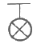
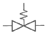
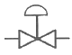
(정답률: 61%)
100. 도시가스 배관 매설에 대한 설명으로 틀린 것은?
- 배관을 철도부지에 매설하는 경우 배관의 외면으로부터 궤도 중심까지 거리는 4m 이상 유지할 것
- 배관을 철도부지에 매설하는 경우 배관의 외면으로부터 철도부지 경계까지 거리는 0.6m 이상 유지할 것
- 배관을 철도부지에 매설하는 경우 지표면으로부터 배관의 외면까지의 깊이는 1.2m 이상 유지할 것
- 배관의 외면으로부터 도로의 경계까지 수평거리 1m 이상 유지할 것
(정답률: 58%)
먼저, $T_1=600K$이고 $T_2=300K$이므로, $T_h-T_c=T_1-T_2=300K$이다. 따라서, $T_h=T_c+300K$이다. 이를 이용하여 $T$를 구해보자.
카르노 사이클에서는 열기관에서의 열 전달이 완전히 역전되므로, 열기관에서의 열 전달량이 같다. 따라서, $Q_1=Q_2$이다. 열 전달량은 $Q=Delta T times C$로 나타낼 수 있다. 여기서 $Delta T$는 열기관에서의 온도 차이, $C$는 열용량이다. 따라서, $Q_1=C_1(T_1-T)=Q_2=C_2(T-T_2)$이다. 이를 이용하여 $T$를 구해보자.
$Q_1=Q_2$이므로, $C_1(T_1-T)=C_2(T-T_2)$이다. 여기서 $C_1=C_2=C$로 가정하면, $C(T_1-T)=C(T-T_2)$이므로, $T=frac{T_1+T_2}{2}=450K$이다. 따라서, 중간 온도 $T$는 약 400K이다.